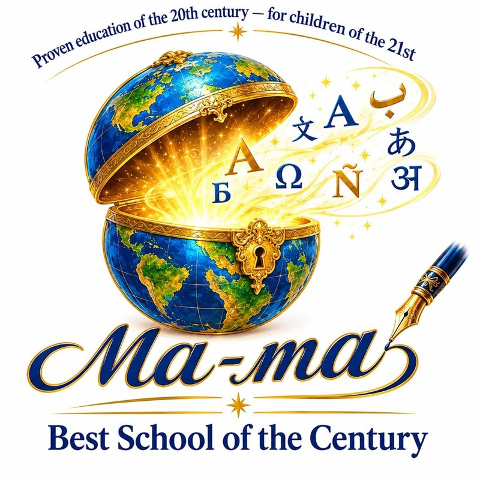

© 2026 Roza Truksane, 15.11.2026

Бесплатная школа для детей. Бот: @best_school_of_century_bot
© 2026 Roza Truksane, 15.11.2026
«Лучшая школа века» — бесплатная школа для детей. Занятия идут в Telegram-боте @best_school_of_century_bot. Курс 1 класса по русскому языку готов: 30 школьных дней с чтением, письмом и счётом, страницами для чтения и прописями. Остальные языки в работе. Школа остаётся бесплатной, мы делаем её своими силами. Вы можете помочь: выберите язык и поддержите его появление.
«Лучшая школа века» makaranta ce ta kyauta ga yara. Darussa suna gudana a cikin Telegram bot @best_school_of_century_bot. Kwas ɗin aji na 1 na harshen Rashanci ya shirya: kwanakin makaranta 30 na karatu, rubutu da lissafi, tare da shafukan karatu da na koyon rubutu. Sauran harsuna suna cikin aiki. Makarantar za ta ci gaba da zama ta kyauta, muna yin ta da ƙoƙarinmu. Kuna iya taimakawa: zaɓi harshe ku taimaka wajen samar da shi.
«Лучшая школа века» jẹ́ ilé-ẹ̀kọ́ ọ̀fẹ́ fún àwọn ọmọdé. Àwọn ẹ̀kọ́ ń lọ lórí Telegram bot @best_school_of_century_bot. Ẹ̀kọ́ Kíláàsì kìíní ní èdè Rọ́ṣíà ti ṣetán: ọjọ́ ilé-ẹ̀kọ́ 30 pẹ̀lú kíkà, kíkọ àti ṣíṣírò, pẹ̀lú àwọn ojú-ìwé kíkà àti ti ìkọ̀wé. Àwọn èdè yòókù ń lọ lọ́wọ́. Ilé-ẹ̀kọ́ náà yóò máa jẹ́ ọ̀fẹ́, a sì ń ṣe é pẹ̀lú agbára wa. Ẹ lè ràn wá lọ́wọ́: ẹ yan èdè kan kí ẹ sì ṣètìlẹ́yìn fún bí yóò ṣe jáde.
«Лучшая школа века» bụ ụlọ akwụkwọ n'efu maka ụmụaka. Ihe omume ọmụmụ na-aga na Telegram bot @best_school_of_century_bot. Nkuzi Klaasị nke Mbụ n'asụsụ Russian akwadọla: ụbọchị ụlọ akwụkwọ 30 nke ọgụgụ, ide na ịgụ ọnụọgụgụ, yana ibe ọgụgụ na ibe ide ihe. Asụsụ ndị ọzọ na-aga n'ihu. Ụlọ akwụkwọ a ga-anọgide n'efu, anyị na-eji ike anyị arụ ya. Ị nwere ike inyere anyị aka: họrọ asụsụ ma kwado ka o pụta.
«Лучшая школа века» ni shule ya bure kwa watoto. Masomo yanafanyika kwenye Telegram bot @best_school_of_century_bot. Kozi ya Darasa la 1 kwa lugha ya Kirusi iko tayari: siku 30 za shule za kusoma, kuandika na kuhesabu, pamoja na kurasa za kusoma na za kujifunza kuandika. Lugha nyingine bado ziko kazini. Shule inabaki bure, tunaijenga kwa nguvu zetu wenyewe. Unaweza kusaidia: chagua lugha na uunge mkono kuipatikana kwake.
«Лучшая школа века» ለልጆች ነፃ ትምህርት ቤት ነው። ትምህርቶች በTelegram ቦት @best_school_of_century_bot ውስጥ ይካሄዳሉ። የ1ኛ ክፍል የሩሲያ ቋንቋ ኮርስ ዝግጁ ነው፦ 30 የትምህርት ቀናት ንባብ፣ ጽሑፍና ሒሳብ ያላቸው፣ ከንባብ ገጾችና የፊደል ልምምድ ገጾች ጋር። ሌሎች ቋንቋዎች በሥራ ላይ ናቸው። ትምህርት ቤቱ ነፃ ሆኖ ይቀጥላል፤ እኛ በራሳችን ኃይል እየሠራነው ነው። እርስዎ መርዳት ይችላሉ፦ ቋንቋ ይምረጡ እና እንዲዘጋጅ ይደግፉ።
«Лучшая школа века» manni barumsaa daa'immanii bilisaan kennamu dha. Barnoonni Telegram bot @best_school_of_century_bot irratti ni kennama. Koorsiin kutaa 1ffaa afaan Rusiyaatiin qophaa'eera: guyyaa barnoota 30, dubbisuu, barreessuu fi herregaa of keessaa qabu, fuulota dubbisaa fi barreeffamaa wajjin. Afaanonni kaan hojiirra jiru. Manni barumsaa bilisaan itti fufa, nuti humna keenyaan hojjenna. Isin nu gargaaruu dandeessu: afaan tokko filadhaa, akka argamuuf deeggaraa.
«Лучшая школа века» ezali kelasi ya ofele mpo na bana. Mateya ezali na Telegram bot @best_school_of_century_bot. Mateya ya Kelasi ya 1 na monɔkɔ ya Russe esili kobongisama: mikolo 30 ya kelasi na kotánga, kokoma mpe kotánga motuya, elongo na mapaja ya kotánga mpe ya kokoma. Minɔkɔ mosusu ezali kosalama. Kelasi ekotikala ya ofele, tozali kosala yango na nguya na biso moko. Okoki kosalisa: pona monɔkɔ mpe lendisa ete ebima.
«Лучшая школа века» yisikole samahhala sezingane. Izifundo ziqhubeka ku-Telegram bot @best_school_of_century_bot. Ikhosi yebanga loku-1 ngesiRashiya isilungile: izinsuku zesikole ezingu-30 zokufunda, ukubhala nokubala, namakhasi okufunda namakhasi okubhala. Ezinye izilimi zisaqhubeka. Isikole sihlala singamahhala, siyenza ngamandla ethu. Ungasiza: khetha ulimi ubuye usekele ukuvela kwalo.
«Лучшая школа века» ye denmisɛnw ka kalanso ye, min t'a sara. Kalan bɛ kɛ Telegram bot @best_school_of_century_bot kan. Rusukan klasi fɔlɔ kalan labɛnnen don: kalan don 30, kalan, sɛbɛnni ni jate ye, ani kalan ni sɛbɛnni ɲɛw. Kan wɛrɛw bɛ ka labɛn. Kalanso bɛna to fantan, an bɛ a kɛ an yɛrɛ ka fanga la. I bɛ se ka dɛmɛ kɛ: kan dɔ sugandi, i ka dɛmɛ a ka bɔ.
«Лучшая школа века» daara la bu amul ñaata ngir xale yi. Njàng mi dafay doon ci Telegram bot @best_school_of_century_bot. Kurs bu klaas bu njëkk ci làkku Riis bi sàkk na: fan 30 yu daara ak jàng, bind ak lim, ak xët yu jàng ak yu bind. Yeneen làkk yi ñu ngi ci liggéey. Daara bi dina des bu amul ñaata, ñuy defar ko ak sunu doole. Mën nga dimbali: tànnal benn làkk te dimbali ko mu feeñ.
«Лучшая школа века» yaa karen-zĩig ning b karemdẽ biis ka tɩ yãk ye. Karengo wẽnd Telegram bot @best_school_of_century_bot pʋgẽ. Klas a 1 karengo ne Rusi gomde sɩd n yaa tɩ: karem-daare 30, karengo, korgo la limbã, ne kaset a karengo la korgo. Gom-bʋs a taabã be tʋʋmdẽ. Karen-zĩiga na n kẽ n pa yãk ye, tõnd tʋmda ne tõnd mensã. Y tõe n sõng-d: yãk gom-bʋs a ye, la sõng-y n na n wa.
“Лучшая школа века” is a free school for children. Lessons take place in the Telegram bot @best_school_of_century_bot. The Grade 1 Russian language course is ready: 30 school days of reading, writing and counting, with reading pages and handwriting practice pages. The other languages are in progress. The school stays free, and we are building it with our own efforts. You can help: choose a language and support its arrival.
„Лучшая школа века“ ist eine kostenlose Schule für Kinder. Der Unterricht findet im Telegram-Bot @best_school_of_century_bot statt. Der Kurs für die 1. Klasse in Russisch ist fertig: 30 Schultage mit Lesen, Schreiben und Rechnen, mit Leseseiten und Schreibheften zum Üben. Die anderen Sprachen sind in Arbeit. Die Schule bleibt kostenlos, wir bauen sie mit eigenen Kräften auf. Sie können helfen: Wählen Sie eine Sprache und unterstützen Sie, dass sie entsteht.
« Лучшая школа века » est une école gratuite pour les enfants. Les cours ont lieu dans le bot Telegram @best_school_of_century_bot. Le cours de CP en russe est prêt : 30 jours d'école avec lecture, écriture et calcul, avec des pages de lecture et des cahiers d'écriture. Les autres langues sont en cours de préparation. L'école reste gratuite, nous la construisons par nos propres moyens. Vous pouvez aider : choisissez une langue et soutenez sa création.
«Лучшая школа века» es una escuela gratuita para niños. Las clases se dan en el bot de Telegram @best_school_of_century_bot. El curso de 1.º de primaria en ruso ya está listo: 30 días de escuela con lectura, escritura y cálculo, con páginas de lectura y cuadernillos de caligrafía. Los demás idiomas están en preparación. La escuela sigue siendo gratuita y la hacemos con nuestras propias fuerzas. Puedes ayudar: elige un idioma y apoya su llegada.
«Лучшая школа века» é uma escola gratuita para crianças. As aulas acontecem no bot do Telegram @best_school_of_century_bot. O curso do 1.º ano em russo está pronto: 30 dias de escola com leitura, escrita e contas, com páginas de leitura e cadernos de caligrafia. Os outros idiomas estão em andamento. A escola continua gratuita, e nós a fazemos com as nossas próprias forças. Você pode ajudar: escolha um idioma e apoie a sua chegada.
«Лучшая школа века» adalah sekolah gratis untuk anak-anak. Pelajaran berlangsung di bot Telegram @best_school_of_century_bot. Kursus kelas 1 untuk bahasa Rusia sudah siap: 30 hari sekolah dengan membaca, menulis, dan berhitung, lengkap dengan halaman bacaan dan buku latihan menulis. Bahasa lainnya sedang dikerjakan. Sekolah ini tetap gratis, dan kami membangunnya dengan kemampuan kami sendiri. Anda bisa membantu: pilih satu bahasa dan dukung kehadirannya.
«Лучшая школа века» çocuklar için ücretsiz bir okuldur. Dersler Telegram botu @best_school_of_century_bot üzerinden yapılır. Rusça 1. sınıf kursu hazır: okuma, yazma ve sayma içeren 30 okul günü, okuma sayfaları ve yazı defterleriyle birlikte. Diğer diller üzerinde çalışıyoruz. Okul ücretsiz kalıyor, onu kendi imkânlarımızla yapıyoruz. Siz de yardım edebilirsiniz: bir dil seçin ve ortaya çıkmasına destek olun.
Собрано всего: $0 (звёзды Telegram и USDT вместе). Первым откроется тот язык, на который соберут раньше.
Русский язык — основа курса: на нём строится каркас методики для всех остальных языков. Африканские языки, а также английский и французский как школьные языки Африки, мы делаем сами при любом финансировании: там детям труднее всего получить доступ к образованию. Другие языки запускаем, когда у языка появляется спонсор.
Каждый следующий класс дороже: больше предметов, сложнее материал, больше книг, и нужно больше способов донести знания до всех, включая неграмотных родителей.
Суммы рассчитаны по ценам на 15.11.2026. Цены, зарплаты и курсы валют меняются, поэтому мы пересматриваем расчёт с учётом инфляции.
Для языков со спонсором показана цель нового языка; остальные языки мы делаем при любом финансировании, счётчик показывает, сколько собрано для них.
Harshen Rashanci shi ne tushen wannan kwas: a kansa ake gina tsarin hanyar koyarwa ga dukkan sauran harsuna. Harsunan Afirka, da kuma Turanci da Faransanci a matsayin harsunan makaranta a Afirka, muna yin su da kanmu komai yawan ko karancin kudin da muka samu: a can ne yara suka fi wahalar samun damar ilimi. Sauran harsuna muna fara su idan harshen ya sami mai daukar nauyi.
Kowane aji na gaba ya fi tsada: darussa sun fi yawa, karatun ya fi wuya, littattafai sun fi yawa, kuma ana bukatar karin hanyoyin isar da ilimi ga kowa, har da iyayen da ba su iya karatu da rubutu ba.
An lissafa kudaden bisa farashin ranar 15.11.2026. Farashi, albashi da canjin kudi suna sauyawa, don haka muna sake duba lissafin bisa la'akari da hauhawar farashi.
Èdè Rọ́ṣíà ni ìpìlẹ̀ ẹ̀kọ́ náà: lórí rẹ̀ ni a ti ń kọ́ ìlànà ọ̀nà ìkọ́ni fún gbogbo àwọn èdè yòókù. Àwọn èdè Áfíríkà, àti Gẹ̀ẹ́sì àti Faransé gẹ́gẹ́ bí èdè ilé-ìwé ní Áfíríkà, ni a ń ṣe fúnra wa láìka iye owó tí a bá rí sí: níbẹ̀ ni ó ti ṣòro jù fún àwọn ọmọdé láti rí ẹ̀kọ́ gbà. A máa ń bẹ̀rẹ̀ àwọn èdè mìíràn nígbà tí èdè náà bá ní onígbọ̀wọ́.
Kíláàsì kọ̀ọ̀kan tó tẹ̀lé e máa ń wọ́n jù: àwọn ẹ̀kọ́ máa ń pọ̀ sí i, ohun tí a ń kọ́ máa ń le sí i, ìwé máa ń pọ̀ sí i, a sì nílò ọ̀nà púpọ̀ sí i láti mú ìmọ̀ dé ọ̀dọ̀ gbogbo ènìyàn, títí kan àwọn òbí tí kò mọ̀wé.
A ṣírò iye owó wọ̀nyí ní ìbámu pẹ̀lú iye ọjà ní ọjọ́ 15.11.2026. Iye ọjà, owó oṣù àti iye pàṣípààrọ̀ owó máa ń yípadà, nítorí náà a máa ń tún ìṣirò náà wò ní ìbámu pẹ̀lú bí iye owó ọjà ṣe ń gòkè.
Asụsụ Rọshịa bụ ntọala nke usoro ọmụmụ a: ọ bụ na ya ka anyị ji wuo ọkpụkpụ usoro nkuzi maka asụsụ ndị ọzọ niile. Asụsụ Afrịka, nakwa Bekee na Frenchi dịka asụsụ ụlọ akwụkwọ n'Afrịka, anyị na-eme onwe anyị n'agbanyeghị ego ole anyị nwetara: n'ebe ahụ ka ọ na-esiri ụmụaka ike karịa inweta agụmakwụkwọ. Asụsụ ndị ọzọ anyị na-amalite mgbe asụsụ ahụ nwetara onye nkwado.
Klaasị ọ bụla na-esote na-efu ego karịa: ihe ọmụmụ ka ukwuu, ihe nkuzi siri ike karịa, akwụkwọ ka ukwuu, a na-achọkwa ụzọ ndị ọzọ karịa iji mee ka ihe ọmụma ruo mmadụ niile, gụnyere ndị nne na nna na-amaghị akwụkwọ.
Anyị ji ọnụ ahịa dị na 15.11.2026 gbakọọ ego ndị a. Ọnụ ahịa, ụgwọ ọnwa na ọnụego mgbanwe ego na-agbanwe, ya mere anyị na-enyochagharị ngụkọ ahụ, na-atụle mmụba ọnụ ahịa.
Kirusi ndio msingi wa kozi: juu yake tunajenga mfumo wa mbinu ya kufundishia kwa lugha nyingine zote. Lugha za Kiafrika, pamoja na Kiingereza na Kifaransa kama lugha za shule barani Afrika, tunaziandaa sisi wenyewe kwa kiwango chochote cha ufadhili: huko ndiko watoto wanapata shida zaidi kupata elimu. Lugha nyingine tunazianzisha pale lugha hiyo inapopata mfadhili.
Kila darasa linalofuata linagharimu zaidi: masomo ni mengi zaidi, maudhui ni magumu zaidi, vitabu ni vingi zaidi, na zinahitajika njia nyingi zaidi za kufikisha maarifa kwa wote, wakiwemo wazazi wasiojua kusoma na kuandika.
Kiasi cha fedha kimekokotolewa kwa bei za tarehe 15.11.2026. Bei, mishahara na viwango vya kubadilisha fedha hubadilika, kwa hiyo tunapitia upya hesabu hizi kwa kuzingatia mfumuko wa bei.
የሩሲያ ቋንቋ የኮርሱ መሠረት ነው፤ ለሌሎቹ ቋንቋዎች ሁሉ የሚያገለግለው የማስተማሪያ ዘዴ ማዕቀፍ በእሱ ላይ ይገነባል። የአፍሪካ ቋንቋዎችን፣ እንዲሁም በአፍሪካ የትምህርት ቤት ቋንቋዎች የሆኑትን እንግሊዝኛና ፈረንሳይኛን የገንዘብ ድጋፉ ምንም ያህል ቢሆን እኛው ራሳችን እንሠራቸዋለን፤ ምክንያቱም እዚያ ልጆች ትምህርት ለማግኘት በጣም ይቸገራሉ። ሌሎች ቋንቋዎችን ደግሞ ለቋንቋው ስፖንሰር ሲገኝ እንጀምራቸዋለን።
እያንዳንዱ ቀጣይ ክፍል የበለጠ ውድ ነው፤ የትምህርት ዓይነቶች ይበዛሉ፣ ይዘቱ ይከብዳል፣ መጻሕፍትም ይበዛሉ፤ እንዲሁም ማንበብና መጻፍ የማይችሉ ወላጆችን ጨምሮ እውቀትን ለሁሉም ለማድረስ ብዙ መንገዶች ያስፈልጋሉ።
መጠኖቹ የተሰሉት በ15.11.2026 በነበረው ዋጋ መሠረት ነው። ዋጋዎች፣ ደመወዞችና የምንዛሪ ተመኖች ስለሚለዋወጡ ስሌቱን የዋጋ ግሽበትን ግምት ውስጥ በማስገባት እንከልሰዋለን።
Afaan Raashiyaa bu'uura koorsichaati: caasaan mala barsiisuu afaanota kaan hundaaf ta'u isa irratti ijaarama. Afaanota Afrikaa, akkasumas Afaan Ingiliffaa fi Afaan Faransaayii akka afaanota mana barumsaa Afrikaatti, maallaqni hammam iyyuu yoo argame ofii keenyaan ni hojjenna: achitti ijoolleen barnoota argachuuf baay'ee rakkatu. Afaanota biroo yeroo afaanichi deeggaraa argatu ni jalqabna.
Kutaan itti aanu hundi kan duraa caalaa qaala'aa dha: gosti barnootaa baay'ata, barnoonni ulfaata, kitaabileen baay'atu, akkasumas beekumsa nama hundaaf, maatii barreessuu fi dubbisuu hin dandeenye dabalatee, geessuuf malawwan baay'ee barbaachisu.
Baay'inni maallaqaa gatii guyyaa 15.11.2026 irratti hundaa'ee shallagame. Gatiin, mindaan fi sadarkaan jijjiirraa maallaqaa ni jijjiiramu, kanaaf shallaggii kana qaala'iinsa gatii ilaalcha keessa galchinee irra deebinee ilaalla.
Lokota ya Rusi ezali moboko ya kursu: likoló na yango totongaka ebandeli ya lolenge ya koteya mpo na minoko mosusu nyonso. Minoko ya Afrika, mpe Lingɛlɛ́sa na Lifalansé lokola minoko ya eteyelo na Afrika, tosalaka yango biso moko ata mbongo ezali ndenge nini: kuna nde bana bakutanaka na mpasi koleka mpo na kozwa boyekoli. Minoko mosusu tobandisaka yango ntango lokota ezwi sponsɔ.
Kelasi moko na moko oyo elandi esɛngaka mbongo mingi koleka: biteyelo mingi, makambo ya koyekola makasi koleka, mikanda mingi, mpe esengeli kozala na banzela mingi mpo na koyebisa boyebi epai ya bato nyonso, ata baboti oyo bayebi kotánga te.
Mitango esalemi na kotalela ntalo ya mokolo 15.11.2026. Ntalo, lifuta mpe motuya ya mbongo ya bikólo mosusu ebongwanaka, yango wana tozongelaka mitango na kotalela komata ya ntalo (inflation).
IsiRashiya siyisisekelo sesifundo: yisona esakhela phezu kwaso uhlaka lwendlela yokufundisa kuzo zonke ezinye izilimi. Izilimi zase-Afrika, kanye nesiNgisi nesiFulentshi njengezilimi zezikole zase-Afrika, sizenza ngokwethu noma ngabe sinoxhaso olungakanani: lapho izingane zithola ubunzima obukhulu kakhulu ukufinyelela emfundweni. Ezinye izilimi siziqala lapho ulimi luthola umxhasi.
Ibanga ngalinye elilandelayo libiza kakhulu: izifundo eziningi, okokufunda okunzima kakhulu, izincwadi eziningi, futhi kudingeka izindlela eziningi zokudlulisela ulwazi kubo bonke, kuhlanganise nabazali abangakwazi ukufunda nokubhala.
Izimali zibalwe ngokwamanani entengo ka-15.11.2026. Amanani entengo, amaholo kanye namanani okushintshaniswa kwemali ayashintsha, ngakho-ke siyakubuyekeza ukubala sicabangela ukwenyuka kwamanani entengo.
Rusikan ye kalan in sinsinnan ye: o de kan, an bɛ kalanni fɛɛrɛ jɔ kan tɔw bɛɛ ye. Afiriki kanw, ani angilɛkan ni faransikan iko Afiriki lakɔliw kanw, an yɛrɛ bɛ olu labɛn, wari hakɛ o hakɛ sɔrɔla: yen de denmisɛnw bɛ gɛlɛya ka bon sɔrɔ ka se kalan ma. An bɛ kan tɔw daminɛ ni dɛmɛbaga dɔ sɔrɔla o kan ye.
Kalan san o kalan san sɔngɔ ka bon ni a ɲɛfɛta ye: kalan suguyaw ka ca, kalan ka gɛlɛn, gafew ka ca, wa a ka kan ka fɛɛrɛ caman sɔrɔ walasa dɔnniya ka se bɛɛ ma, hali bangebaga minnu ma kalan.
Wari hakɛw jateminɛna ka kɛɲɛ ni sɔngɔw ye 15.11.2026. Sɔngɔw, saraw ani wariw falenni sɔngɔ bɛ yɛlɛma, o de kosɔn an bɛ jateminɛ kɛ kokura ka da sɔngɔw yɛlɛli kan.
Làkku Rus mooy cosaanu njàngale mi: ci kawam lañuy tabax doxalinu jàngale bi ngir yeneen làkk yépp. Làkki Afrig yi, ak itam angale ak faranse ni làkki lekool yu Afrig, nun ci sunu bopp lañu leen di def, lu xaalis bi mana tollu: fa la xale yi gëna jafe-jafe ngir am njàng. Yeneen làkk yi, dañu leen di tàmbali bu benn làkk amee ku koy jàppale.
Klaas bu nekk bu ci topp dafay gëna seer: ay ëttu njàng yu gëna bare, ay jàng-jàng yu gëna jafe, ay téere yu gëna bare, te dañuy soxla yeneen pexe ngir yegal xam-xam bi ñépp, ba ci waajur yi xamul jàng ak bind.
Lim yi, ñu ngi leen waññe ak njëg yi nekkoon ci 15.11.2026. Njëg yi, pey yi ak njëgu xaalis yu bitim-réew dañuy soppeeku, moo tax danuy waññaat lim yi, di xool yokkuteg njëg yi.
Rʋsi goamã la karengã yẽgre: yẽ zug la d me karen-sõorã manesem ne goam a taabã fãa. Afiriki goamã, la Angle ne Fãrse goamã sẽn yaa lekoll goam Afirikã, d maand-b-la ne d mens baa d sẽn paam ligd wala to-to: be la kambã sẽn pak n yɩɩd n paamd karengo. Goam a taabã, d sɩngd-b-la wakat ning goamã sẽn paam sõngda.
Klaas fãa sẽn pʋgdã ligdã yɩɩda: karen-buud wʋsgo, bãngrã yaa toogo, sɛb wʋsgo, la d segd n paama sor wʋsgo n tʋg ne bãngrã neb fãa nengẽ, baa roagdb sẽn ka bãng gʋlsg ne karengã.
Ligdã kalgã maana ne bõn-yaood sẽn da be 15.11.2026. Bõn-yaood, tʋʋm-rãmbã ligdi la ligd-buud toeengã yaa toeemdi, rẽ n so tɩ d leb n gesd kalgã, n get bõn-yaood zẽkre.
Russian is the foundation of the course: it is the base for the teaching method used for all the other languages. We create courses in African languages, as well as in English and French as the school languages of Africa, ourselves, whatever the funding: that is where children find it hardest to get access to education. We launch other languages when a language gets a sponsor.
Each next grade costs more: more subjects, harder material, more books, and more ways are needed to bring knowledge to everyone, including parents who cannot read.
The amounts are calculated using prices as of 15 November 2026. Prices, salaries and exchange rates change, so we review the calculation to account for inflation.
Russisch ist die Grundlage des Kurses: Darauf baut das Gerüst der Methodik für alle anderen Sprachen auf. Afrikanische Sprachen sowie Englisch und Französisch als Schulsprachen Afrikas entwickeln wir selbst, egal wie viel Geld wir haben: Dort ist es für Kinder am schwersten, Zugang zu Bildung zu bekommen. Andere Sprachen starten wir, sobald sich für die Sprache ein Sponsor findet.
Jede weitere Klasse ist teurer: mehr Fächer, schwierigerer Stoff, mehr Bücher, und es braucht mehr Wege, das Wissen allen zu vermitteln, auch Eltern, die nicht lesen und schreiben können.
Die Beträge sind nach den Preisen vom 15.11.2026 berechnet. Preise, Gehälter und Wechselkurse ändern sich, deshalb überprüfen wir die Berechnung unter Berücksichtigung der Inflation.
Le russe est la base du cours : c'est sur lui que repose la structure de la méthode pour toutes les autres langues. Les langues africaines, ainsi que l'anglais et le français en tant que langues scolaires de l'Afrique, nous les réalisons nous-mêmes, quel que soit le financement : c'est là que les enfants ont le plus de mal à accéder à l'éducation. Nous lançons les autres langues lorsqu'une langue trouve un sponsor.
Chaque année suivante coûte plus cher : plus de matières, des contenus plus complexes, plus de livres, et il faut davantage de moyens pour transmettre les connaissances à tous, y compris aux parents qui ne savent ni lire ni écrire.
Les montants sont calculés selon les prix au 15/11/2026. Les prix, les salaires et les taux de change évoluent, c'est pourquoi nous révisons le calcul en tenant compte de l'inflation.
El ruso es la base del curso: sobre él se construye la estructura del método para todos los demás idiomas. Las lenguas africanas, así como el inglés y el francés como lenguas escolares de África, las desarrollamos nosotros mismos con cualquier nivel de financiación: allí es donde a los niños les resulta más difícil acceder a la educación. Los demás idiomas los ponemos en marcha cuando el idioma consigue un patrocinador.
Cada grado siguiente cuesta más: más asignaturas, material más complejo, más libros, y se necesitan más formas de hacer llegar el conocimiento a todos, incluidos los padres que no saben leer ni escribir.
Los importes se calcularon con los precios del 15.11.2026. Los precios, los salarios y los tipos de cambio varían, por eso revisamos el cálculo teniendo en cuenta la inflación.
O russo é a base do curso: é sobre ele que se constrói a estrutura da metodologia para todos os outros idiomas. Os idiomas africanos, assim como o inglês e o francês, que são línguas escolares na África, nós fazemos por conta própria, independentemente do financiamento, porque é lá que as crianças têm mais dificuldade para ter acesso à educação. Outros idiomas começamos quando o idioma ganha um patrocinador.
Cada ano seguinte custa mais: há mais matérias, o conteúdo é mais complexo, há mais livros, e são necessárias mais formas de levar o conhecimento a todos, inclusive aos pais que não sabem ler nem escrever.
Os valores foram calculados com base nos preços de 15/11/2026. Preços, salários e taxas de câmbio mudam, por isso revisamos o cálculo levando em conta a inflação.
Bahasa Rusia adalah dasar kursus ini: di atasnya dibangun kerangka metode untuk semua bahasa lainnya. Bahasa-bahasa Afrika, serta bahasa Inggris dan Prancis sebagai bahasa sekolah di Afrika, kami kerjakan sendiri berapa pun dana yang ada: di sanalah anak-anak paling sulit mendapatkan akses pendidikan. Bahasa lain kami mulai ketika bahasa itu mendapatkan sponsor.
Setiap kelas berikutnya lebih mahal: lebih banyak mata pelajaran, materi lebih sulit, lebih banyak buku, dan dibutuhkan lebih banyak cara untuk menyampaikan pengetahuan kepada semua orang, termasuk orang tua yang tidak bisa membaca dan menulis.
Jumlah ini dihitung berdasarkan harga per 15.11.2026. Harga, gaji, dan kurs mata uang berubah, karena itu kami meninjau kembali perhitungan dengan memperhitungkan inflasi.
Rusça kursun temelidir: diğer tüm diller için yöntemin iskeleti onun üzerine kurulur. Afrika dillerini ve Afrika'nın okul dilleri olarak İngilizce ile Fransızcayı, finansman ne olursa olsun kendimiz hazırlıyoruz: çocukların eğitime ulaşması en çok oralarda zor. Diğer dilleri ise o dile bir sponsor bulunduğunda başlatıyoruz.
Her yeni sınıf daha pahalıdır: daha fazla ders, daha zor konular, daha çok kitap demektir. Ayrıca bilgiyi okuma yazma bilmeyen ebeveynler dahil herkese ulaştırmak için daha fazla yol gerekir.
Tutarlar 15.11.2026 tarihindeki fiyatlara göre hesaplanmıştır. Fiyatlar, maaşlar ve döviz kurları değiştiği için hesaplamayı enflasyonu dikkate alarak yeniden gözden geçiriyoruz.
Поддержка добровольная и не является покупкой. Материалы школы бесплатны. Условия · Политика конфиденциальности
Имена — только с согласия человека, иначе «Аноним».
Раз в месяц — короткий отчёт, куда ушли деньги. Первый отчёт — после первых поступлений.